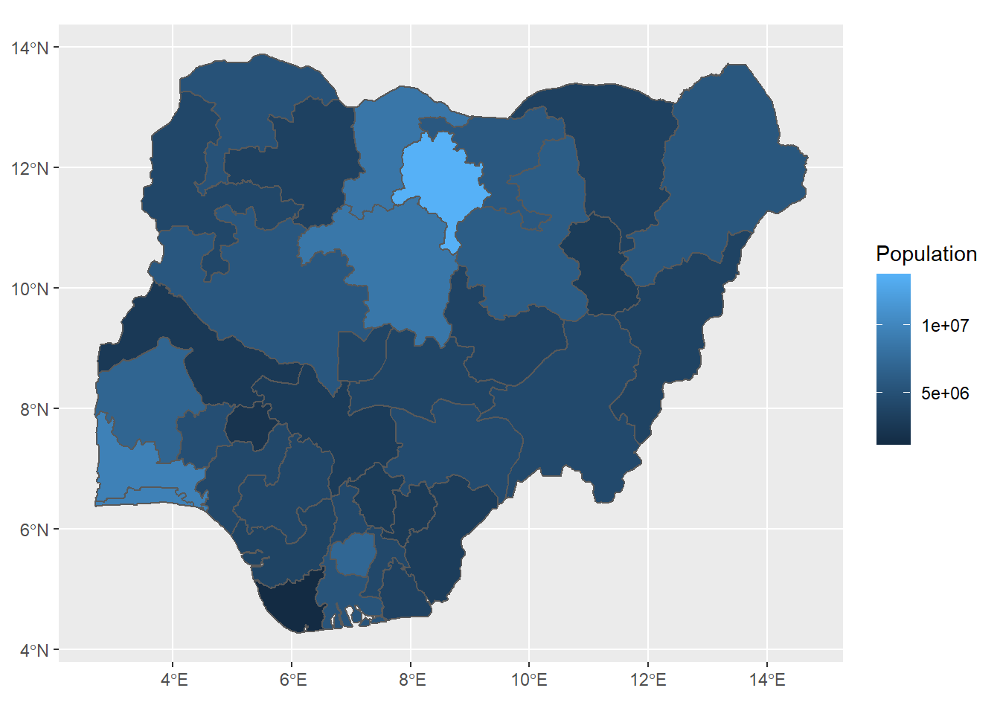

Population
Downloading Population data using wopr
wopr is an R package that provides access to the WorldPop Open Population Repository and gets estimates of population sizes for specific demographic groups.
Installing wopr
The wopr package can be directly downloaded from the GitHub repository of the package. For this we use the remotes package which allows easy installation of R packages from remote repositories such as GitHub. So we install and load the remotes package and use it to install the wopr package as follows
install.packages("remotes")
library(remotes)
remotes::install_github('wpgp/wopr')Downloading data
To download the population data we first retrieve the WOPR data catalogue and then subset the data frame for the country we are interested in. In this tutorial we use ‘NGA’ which refers to Nigeria. WOPR uses ISO country codes to abbreviate country names.
Then we simply download the data for the subsetted catalogue selection using the downloadData() function. Note that downloadData() will not download files larger than 100MB by default unless the maxsize argument is changed (see ?downloadData)
library(wopr)
# Retrieve the WOPR data catalogue
catalogue <- getCatalogue()
# Select files from the catalogue by subsetting the data frame
selection <- subset(catalogue,
country == 'NGA' &
category == 'Population' &
version == 'v1.2')
# Download selected files
downloadData(selection)Understanding the downloaded data
The download will create a folder named ./wopr in the R working directory for the downloaded files and a spreadsheet with information on the downloaded files will be available at ./wopr/wopr_catalogue.csv
Since we downloaded the population estimates of Nigeria(NGA), zipped data files will be available at ./wopr/NGA/population/v1.2 which will then have to be manually unzipped.
The folder structure will look as follows
working directory
└── wopr
├── wopr_catalogue.csv
└── NGA
└── population
└── v1.2
├── NGA_population_v1_2_admin.zip
├── NGA_population_v1_2_gridded.zip
├── NGA_population_v1_2_mastergrid.tif
├── NGA_population_v1_2_methods.zip
└── NGA_population_v1_2_README.pdfSince the zipped file ./wopr/NGA/population/v1.2/NGA_population_v1_2_admin.zip contains population totals for administrative units in Nigeria (i.e. states and local government areas) and shapefiles for the administrative boundaries, we unzip this file and place it in the same directory. The folder structure will now look as follows
working directory
└── wopr
├── wopr_catalogue.csv
└── NGA
└── population
└── v1.2
├── NGA_population_v1_2_admin.zip
├── ...
└── NGA_population_v1_2_admin
├── NGA_population_v1_2_admin_level0.csv
├── ...The unzipped folder (at ./wopr/NGA/population/v1.2/NGA_population_v1_2_admin) will contain multiple .csv files and .shp files containing data on multiple administrative levels of Nigeria, which we will use to visualise the population.
The .csv files contain a summary of the distributions of the population estimates, while the .shp files contain vector geospatial data for the respective administrative divisions.
Population of different administrative levels of Nigeria
In this tutorial we use the rgdal package to read in the downloaded shapefiles into R. The rgdal package provides bindings for the Geospatial Data Abstraction Library allowing us to read in raster and vector geospatial data formats.
We will also use the here package to get file paths to the working directory so that we can simply use relative paths to import files.
First we read in the administrative level 2 data of Nigeria as follows
# install.packages(c("rgdal", "here"))
library(rgdal)
library(here)
admin_level2_shape <- readOGR(dsn=here::here("wopr/NGA/population/v1.2/NGA_population_v1_2_admin/NGA_population_v1_2_admin_level2_boundaries.shp"), verbose=FALSE)The ggplot2 package can be used to plot the administrative boundaries and visualise the population. ggplot2 allows us to easily visualise simple feature objects using the geom_sf() function, but we will need to convert the shapefile we have into a simple feature object. This can be done using the st_as_sf() function in the sf package.
# install.packages(c("sf", "ggplot2"))
library(sf)
library(ggplot2)
admin_level2_shape %>%
sf::st_as_sf() %>%
ggplot(aes(fill = mean)) +
geom_sf()
Similarly the administrative level 3 data can also be visualised as follows
admin_level3_shape <- readOGR(here::here("wopr/NGA/population/v1.2/NGA_population_v1_2_admin/NGA_population_v1_2_admin_level3_boundaries.shp"), verbose=FALSE)
admin_level3_shape %>%
sf::st_as_sf() %>%
ggplot(aes(fill = mean)) +
geom_sf()
References
woprrepository: https://github.com/wpgp/wopr
ggplot2package: https://ggplot2.tidyverse.org/